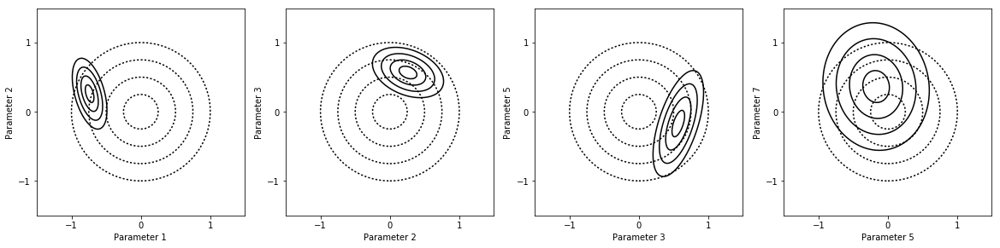
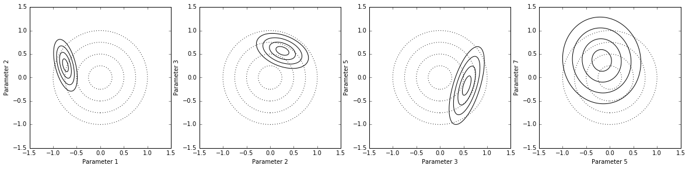
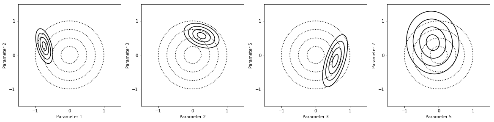
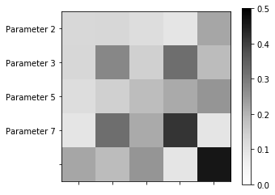
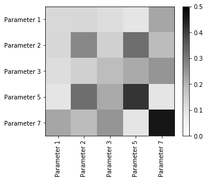

Example usage and output¶
Imports¶
In [1]:
%matplotlib inline
#import mumpce_py as mumpce
import mumpce
import numpy as np
import mumpce.toy
Models¶
Creating a model directly¶
In [2]:
experiment_number = 0
my_model = mumpce.toy.toy_model(experiment_number)
my_model.get_model_parameter_info()
Out[2]:
array([{'parameter_number': 0, 'parameter_name': 'Parameter 1'},
{'parameter_number': 1, 'parameter_name': 'Parameter 2'},
{'parameter_number': 2, 'parameter_name': 'Parameter 3'},
{'parameter_number': 3, 'parameter_name': 'Parameter 4'},
{'parameter_number': 4, 'parameter_name': 'Parameter 5'},
{'parameter_number': 5, 'parameter_name': 'Parameter 6'},
{'parameter_number': 6, 'parameter_name': 'Parameter 7'}], dtype=object)
Evaluation and sensitivity analysis¶
In [3]:
my_model.evaluate()
Out[3]:
1.2214027581601699
In [4]:
V,S = my_model.sensitivity(0.0000001)
Value = 1.22140275816
Param Value+ Value- Sensitivity
0 1.22140e+00 1.22140e+00 1.0000e+00
1 1.22140e+00 1.22140e+00 6.0000e-01
2 1.22140e+00 1.22140e+00 4.0000e-01
3 1.22140e+00 1.22140e+00 1.0000e-01
4 1.22140e+00 1.22140e+00 3.0000e-02
5 1.22140e+00 1.22140e+00 1.0000e-02
6 1.22140e+00 1.22140e+00 2.0000e-02
Measurements¶
Initializing measurements¶
In [5]:
toy_measurements = mumpce.toy.toy_initialize('mumpce_toy_experiments.xlsx',mumpce.toy.toy_model)
toy_apps = mumpce.toy.toy_initialize('mumpce_toy_apps.xlsx',mumpce.toy.toy_app)
Sensitivity analysis with Measurements¶
In [6]:
for meas in toy_measurements:
print(meas.name)
meas.evaluate_sensitivity(perturbation=0.0000000001)
for meas in toy_apps:
print (meas.name)
meas.evaluate_sensitivity(perturbation=0.0000000001)
Experiment 1
Value = 1.22140275816
Param Value+ Value- Sensitivity
0 1.22140e+00 1.22140e+00 1.0000e+00
1 1.22140e+00 1.22140e+00 6.0000e-01
2 1.22140e+00 1.22140e+00 4.0000e-01
3 1.22140e+00 1.22140e+00 1.0000e-01
4 1.22140e+00 1.22140e+00 3.0000e-02
5 1.22140e+00 1.22140e+00 1.0001e-02
6 1.22140e+00 1.22140e+00 2.0000e-02
Experiment 2
Value = 0.548811636094
Param Value+ Value- Sensitivity
0 5.48812e-01 5.48812e-01 2.0000e-02
1 5.48812e-01 5.48812e-01 6.0000e-01
2 5.48812e-01 5.48812e-01 1.0000e+00
3 5.48812e-01 5.48812e-01 2.9999e-02
4 5.48812e-01 5.48812e-01 1.0000e-01
5 5.48812e-01 5.48812e-01 1.0000e-02
6 5.48812e-01 5.48812e-01 4.0000e-01
Experiment 3
Value = 1.6487212707
Param Value+ Value- Sensitivity
0 1.64872e+00 1.64872e+00 1.0000e+00
1 1.64872e+00 1.64872e+00 4.0000e-01
2 1.64872e+00 1.64872e+00 6.0000e-01
3 1.64872e+00 1.64872e+00 1.0000e-01
4 1.64872e+00 1.64872e+00 2.0000e-02
5 1.64872e+00 1.64872e+00 3.0001e-02
6 1.64872e+00 1.64872e+00 9.9998e-03
Experiment 4
Value = 2.22554092849
Param Value+ Value- Sensitivity
0 2.22554e+00 2.22554e+00 4.0000e-01
1 2.22554e+00 2.22554e+00 1.0000e+00
2 2.22554e+00 2.22554e+00 1.0000e-02
3 2.22554e+00 2.22554e+00 1.9999e-02
4 2.22554e+00 2.22554e+00 6.0000e-01
5 2.22554e+00 2.22554e+00 3.0000e-02
6 2.22554e+00 2.22554e+00 1.0000e-01
Experiment 5
Value = 1.6487212707
Param Value+ Value- Sensitivity
0 1.64872e+00 1.64872e+00 3.0001e-02
1 1.64872e+00 1.64872e+00 1.0000e-01
2 1.64872e+00 1.64872e+00 1.0000e+00
3 1.64872e+00 1.64872e+00 2.0000e-02
4 1.64872e+00 1.64872e+00 6.0000e-01
5 1.64872e+00 1.64872e+00 9.9998e-03
6 1.64872e+00 1.64872e+00 4.0000e-01
Application 1
Value = 1.0
Param Value+ Value- Sensitivity
0 1.00000e+00 1.00000e+00 1.0000e+00
1 1.00000e+00 1.00000e+00 2.0000e-01
2 1.00000e+00 1.00000e+00 1.0000e-02
3 1.00000e+00 1.00000e+00 1.0000e-02
4 1.00000e+00 1.00000e+00 1.0000e-02
5 1.00000e+00 1.00000e+00 1.0000e-02
6 1.00000e+00 1.00000e+00 1.0000e-02
Projects¶
Create the Project¶
In [7]:
my_project = mumpce.Project(measurement_list=toy_measurements,
application_list=toy_apps,
model=mumpce.toy.toy_model,
parameter_uncertainties=mumpce.toy.parameter_uncertainties)
Initializing Measurements within Projects¶
In [8]:
my_project_with_init = mumpce.Project(parameter_uncertainties=mumpce.toy.parameter_uncertainties,
initialize_function=mumpce.toy.toy_initialize)
my_project_with_init.measurement_initialize('mumpce_toy_experiments.xlsx')
my_project_with_init.application_initialize('mumpce_toy_apps.xlsx')
Note
This is exactly equivalent to creating the Project with the measurement and application lists already created.
In [9]:
print(my_project[0])
print(my_project['Experiment 1'])
Experiment 1 (Active): 0
Experiment 1 (Active): 0
Sensitivity analysis with Projects¶
Do sensitivity over all measurements in the measurement and application lists
Note
Calling Project.find_sensitivity() is the same as calling Measurement.evaluate_sensitivity() for each measurement
In [10]:
my_project.find_sensitivity()
Experiment 1
Value = 1.22140275816
Param Value+ Value- Sensitivity
0 1.28247e+00 1.16324e+00 9.7619e-01
1 1.25769e+00 1.18617e+00 5.8557e-01
2 1.24547e+00 1.19780e+00 3.9035e-01
3 1.22738e+00 1.21546e+00 9.7581e-02
4 1.22319e+00 1.21962e+00 2.9274e-02
5 1.22200e+00 1.22081e+00 9.7580e-03
6 1.22260e+00 1.22021e+00 1.9516e-02
Experiment 2
Value = 0.548811636094
Param Value+ Value- Sensitivity
0 5.49347e-01 5.48276e-01 1.9516e-02
1 5.65115e-01 5.32979e-01 5.8557e-01
2 5.76252e-01 5.22678e-01 9.7619e-01
3 5.49616e-01 5.48009e-01 2.9274e-02
4 5.51496e-01 5.46140e-01 9.7581e-02
5 5.49079e-01 5.48544e-01 9.7580e-03
6 5.59627e-01 5.38205e-01 3.9035e-01
Experiment 3
Value = 1.6487212707
Param Value+ Value- Sensitivity
0 1.73116e+00 1.57021e+00 9.7619e-01
1 1.68121e+00 1.61686e+00 3.9035e-01
2 1.69770e+00 1.60116e+00 5.8557e-01
3 1.65679e+00 1.64070e+00 9.7581e-02
4 1.65033e+00 1.64711e+00 1.9516e-02
5 1.65114e+00 1.64631e+00 2.9274e-02
6 1.64953e+00 1.64792e+00 9.7580e-03
Experiment 4
Value = 2.22554092849
Param Value+ Value- Sensitivity
0 2.26940e+00 2.18253e+00 3.9035e-01
1 2.33682e+00 2.11956e+00 9.7619e-01
2 2.22663e+00 2.22446e+00 9.7580e-03
3 2.22771e+00 2.22337e+00 1.9516e-02
4 2.29165e+00 2.16133e+00 5.8557e-01
5 2.22880e+00 2.22229e+00 2.9274e-02
6 2.23643e+00 2.21471e+00 9.7581e-02
Experiment 5
Value = 1.6487212707
Param Value+ Value- Sensitivity
0 1.65114e+00 1.64631e+00 2.9274e-02
1 1.65679e+00 1.64070e+00 9.7581e-02
2 1.73116e+00 1.57021e+00 9.7619e-01
3 1.65033e+00 1.64711e+00 1.9516e-02
4 1.69770e+00 1.60116e+00 5.8557e-01
5 1.64953e+00 1.64792e+00 9.7580e-03
6 1.68121e+00 1.61686e+00 3.9035e-01
Application 1
Value = 1.0
Param Value+ Value- Sensitivity
0 1.05000e+00 9.52381e-01 9.7619e-01
1 1.00981e+00 9.90289e-01 1.9516e-01
2 1.00049e+00 9.99512e-01 9.7580e-03
3 1.00049e+00 9.99512e-01 9.7580e-03
4 1.00049e+00 9.99512e-01 9.7580e-03
5 1.00049e+00 9.99512e-01 9.7580e-03
6 1.00049e+00 9.99512e-01 9.7580e-03
In [11]:
for meas in my_project:
meas.evaluate_sensitivity()
Value = 1.22140275816
Param Value+ Value- Sensitivity
0 1.28247e+00 1.16324e+00 9.7619e-01
1 1.25769e+00 1.18617e+00 5.8557e-01
2 1.24547e+00 1.19780e+00 3.9035e-01
3 1.22738e+00 1.21546e+00 9.7581e-02
4 1.22319e+00 1.21962e+00 2.9274e-02
5 1.22200e+00 1.22081e+00 9.7580e-03
6 1.22260e+00 1.22021e+00 1.9516e-02
Value = 0.548811636094
Param Value+ Value- Sensitivity
0 5.49347e-01 5.48276e-01 1.9516e-02
1 5.65115e-01 5.32979e-01 5.8557e-01
2 5.76252e-01 5.22678e-01 9.7619e-01
3 5.49616e-01 5.48009e-01 2.9274e-02
4 5.51496e-01 5.46140e-01 9.7581e-02
5 5.49079e-01 5.48544e-01 9.7580e-03
6 5.59627e-01 5.38205e-01 3.9035e-01
Value = 1.6487212707
Param Value+ Value- Sensitivity
0 1.73116e+00 1.57021e+00 9.7619e-01
1 1.68121e+00 1.61686e+00 3.9035e-01
2 1.69770e+00 1.60116e+00 5.8557e-01
3 1.65679e+00 1.64070e+00 9.7581e-02
4 1.65033e+00 1.64711e+00 1.9516e-02
5 1.65114e+00 1.64631e+00 2.9274e-02
6 1.64953e+00 1.64792e+00 9.7580e-03
Value = 2.22554092849
Param Value+ Value- Sensitivity
0 2.26940e+00 2.18253e+00 3.9035e-01
1 2.33682e+00 2.11956e+00 9.7619e-01
2 2.22663e+00 2.22446e+00 9.7580e-03
3 2.22771e+00 2.22337e+00 1.9516e-02
4 2.29165e+00 2.16133e+00 5.8557e-01
5 2.22880e+00 2.22229e+00 2.9274e-02
6 2.23643e+00 2.21471e+00 9.7581e-02
Value = 1.6487212707
Param Value+ Value- Sensitivity
0 1.65114e+00 1.64631e+00 2.9274e-02
1 1.65679e+00 1.64070e+00 9.7581e-02
2 1.73116e+00 1.57021e+00 9.7619e-01
3 1.65033e+00 1.64711e+00 1.9516e-02
4 1.69770e+00 1.60116e+00 5.8557e-01
5 1.64953e+00 1.64792e+00 9.7580e-03
6 1.68121e+00 1.61686e+00 3.9035e-01
Value = 1.0
Param Value+ Value- Sensitivity
0 1.05000e+00 9.52381e-01 9.7619e-01
1 1.00981e+00 9.90289e-01 1.9516e-01
2 1.00049e+00 9.99512e-01 9.7580e-03
3 1.00049e+00 9.99512e-01 9.7580e-03
4 1.00049e+00 9.99512e-01 9.7580e-03
5 1.00049e+00 9.99512e-01 9.7580e-03
6 1.00049e+00 9.99512e-01 9.7580e-03
Note
The Project acts as an iterable over its measurements and applications
Response surface analysis¶
Active parameters¶
In [12]:
my_project.find_active_parameters(0.1)
Experiment 1
Experiment 2
Experiment 3
Experiment 4
Experiment 5
In [13]:
print(my_project.active_parameters)
print(my_project.active_parameter_uncertainties)
[0 1 2 4 6]
[ 2.71828183 2.71828183 2.71828183 2.71828183 2.71828183]
In [14]:
my_project.set_active_parameters()
Response surface evaluation¶
In [15]:
for meas in my_project:
meas.model.loglevel=False # Suppress output in sensitivity analysis
my_project.make_response()
Widget Javascript not detected. It may not be installed properly. Did you enable the widgetsnbextension? If not, then run "jupyter nbextension enable --py --sys-prefix widgetsnbextension"
Widget Javascript not detected. It may not be installed properly. Did you enable the widgetsnbextension? If not, then run "jupyter nbextension enable --py --sys-prefix widgetsnbextension"
Widget Javascript not detected. It may not be installed properly. Did you enable the widgetsnbextension? If not, then run "jupyter nbextension enable --py --sys-prefix widgetsnbextension"
Widget Javascript not detected. It may not be installed properly. Did you enable the widgetsnbextension? If not, then run "jupyter nbextension enable --py --sys-prefix widgetsnbextension"
Widget Javascript not detected. It may not be installed properly. Did you enable the widgetsnbextension? If not, then run "jupyter nbextension enable --py --sys-prefix widgetsnbextension"
Widget Javascript not detected. It may not be installed properly. Did you enable the widgetsnbextension? If not, then run "jupyter nbextension enable --py --sys-prefix widgetsnbextension"
In [16]:
for meas in my_project:
print (np.array([meas.response.a]))
[[ 1. 0.6 0.4 0.03 0.02]]
[[ 0.02 0.6 1. 0.1 0.4 ]]
[[ 1. 0.4 0.6 0.02 0.01]]
[[ 0.4 1. 0.01 0.6 0.1 ]]
[[ 0.03 0.1 1. 0.6 0.4 ]]
[[ 1. 0.2 0.01 0.01 0.01]]
Solving the Project¶
In [17]:
my_project.run_optimization()
(5,)
Both actual and predicted relative reductions in the sum of squares
are at most 0.000000
Out[17]:
(array([-0.58888728, 1.12003551, 0.00704031, -1.62385897, 0.8043988 ]),
array([[ 0.01488721, -0.01894579, -0.0104734 , 0.01325883, 0.04734255],
[-0.01894579, 0.04284732, -0.00131388, -0.04801795, -0.04545704],
[-0.0104734 , -0.00131388, 0.02343655, 0.01588293, -0.05618227],
[ 0.01325883, -0.04801795, 0.01588293, 0.08171971, 0.00875019],
[ 0.04734255, -0.04545704, -0.05618227, 0.00875019, 0.2066927 ]]))
Parameter uncertainty analysis¶
Because there is an outlier, the parameter values estimated for the constrained model are preposterous. Consistency analysis will fix this.
In [18]:
factors_list = [[0,1],
[1,2],
[2,3],
[3,4],
]
fig = my_project.plot_pdfs(factors_list)

Consistency analysis¶
In [19]:
my_project.remove_inconsistent_measurements()
(5,)
Both actual and predicted relative reductions in the sum of squares
are at most 0.000000
Experiment 1
Uncertainty Ratio: 0.86
Normalized Score: -1.47
Weighted Consistency 1.08
(5,)
Both actual and predicted relative reductions in the sum of squares
are at most 0.000000
No inconsistent measurements
Note
Application 1 doesn’t actually have a value, so the 0.00 value and 0.00 uncertainty are placeholders
In [20]:
print (my_project.solution.alpha)
[[ 0.12479468 0. 0. 0. 0. ]
[-0.12013267 0.22624567 0. 0. 0. ]
[-0.10457956 -0.12695211 0.07784912 0. 0. ]
[ 0.05268069 -0.3544285 0.01919642 0.13432677 0. ]
[ 0.39559594 0.06070328 -0.1889603 -0.04967127 0.11964893]]
Parameter uncertainty analysis¶
The parameter values are much more reasonable with the outlier removed.
In [21]:
factors_list = [[0,1],
[1,2],
[2,3],
[3,4],
]
fig = my_project.plot_pdfs(factors_list)

Experimental design¶
In [22]:
my_project.remove_low_information_measurements()
Experiment 2 Entropy flux 0.002021
Experiment 3 Entropy flux 0.026705
Experiment 4 Entropy flux 0.000073
Experiment 5 Entropy flux -0.000179
Application 1 Entropy flux -0.028620
Experiment 1 Entropy flux 0.000000
Experiment 5 Entropy flux -0.00
Experiment 2 Entropy flux 0.001914
Experiment 3 Entropy flux 0.026593
Experiment 4 Entropy flux 0.000074
Application 1 Entropy flux -0.028582
Experiment 1 Entropy flux 0.000000
Experiment 5 Entropy flux 0.000000
No low-information measurements
In [23]:
print (my_project.solution.alpha)
[[ 0.12547508 0. 0. 0. 0. ]
[-0.13014049 0.24328481 0. 0. 0. ]
[-0.09975008 -0.13704602 0.07786079 0. 0. ]
[ 0.0688092 -0.38530355 0.01937665 0.13471687 0. ]
[ 0.39525824 0.06522259 -0.1889297 -0.04926863 0.11986361]]
Parameter uncertainty analysis¶
In [24]:
factors_list = [[0,1],
[1,2],
[2,3],
[3,4],
]
fig = my_project.plot_pdfs(factors_list)

In [25]:
factors_list = [[0,4],
[1,3],
[2,4],
[0,2],
]
fig = my_project.plot_pdfs(factors_list)

In [ ]:
In [26]:
my_project.plot_covariance()

In [27]:
#my_project.interpret_model()
print(my_project.interpret_model())
Parameter name Value Uncert FactVal FactUnc NewVal Uncert
Parameter 1 : 1 2.72 -0.74 0.25 0.48 1.29
Parameter 2 : 1 2.72 0.26 0.55 1.3 1.74
Parameter 3 : 1 2.72 0.57 0.37 1.8 1.45
Parameter 5 : 1 2.72 -0.17 0.83 0.84 2.29
Parameter 7 : 1 2.72 0.36 0.92 1.4 2.52
In [28]:
print(my_project.print_model_values())
Parameter name Value Uncert
Parameter 1 : 1 2.72
Parameter 2 : 1 2.72
Parameter 3 : 1 2.72
Parameter 5 : 1 2.72
Parameter 7 : 1 2.72
In [29]:
print(my_project.validate_solution())
Name Value Unc OptVal OptUnc MdlVal MdlUnc
Experiment 2 : 0.25 0.05 0.24 0.05 -0.60 0.62
Experiment 3 : 0.20 0.05 0.21 0.05 0.50 0.62
Experiment 4 : 0.70 0.08 0.70 0.08 0.80 0.62
Application 1 : 0.00 0.00 -0.68 0.11 0.00 0.51
Experiment 1 : 0.40 0.05 -0.15 0.09 0.20 0.62
Experiment 5 : 0.40 0.80 1.11 0.34 0.50 0.62
In [30]:
print(my_project)
project
6 measurements
Experiment 2 (Active): 1
Experiment 3 (Active): 2
Experiment 4 (Active): 3
Application 1 (Application): 0
Experiment 1 (Inconsistent): 0
Experiment 5 (Low Information): 4
Name Value Unc OptVal OptUnc MdlVal MdlUnc
Experiment 2 : 0.25 0.05 0.24 0.05 -0.60 0.62
Experiment 3 : 0.20 0.05 0.21 0.05 0.50 0.62
Experiment 4 : 0.70 0.08 0.70 0.08 0.80 0.62
Application 1 : 0.00 0.00 -0.68 0.11 0.00 0.51
Experiment 1 : 0.40 0.05 -0.15 0.09 0.20 0.62
Experiment 5 : 0.40 0.80 1.11 0.34 0.50 0.62
Parameter name Value Uncert FactVal FactUnc NewVal Uncert
Parameter 1 : 1 2.72 -0.74 0.25 0.48 1.29
Parameter 2 : 1 2.72 0.26 0.55 1.3 1.74
Parameter 3 : 1 2.72 0.57 0.37 1.8 1.45
Parameter 5 : 1 2.72 -0.17 0.83 0.84 2.29
Parameter 7 : 1 2.72 0.36 0.92 1.4 2.52
In [31]:
print(my_project.model_parameter_info)
[{'parameter_number': 0, 'parameter_name': 'Parameter 1'}
{'parameter_number': 1, 'parameter_name': 'Parameter 2'}
{'parameter_number': 2, 'parameter_name': 'Parameter 3'}
{'parameter_number': 3, 'parameter_name': 'Parameter 4'}
{'parameter_number': 4, 'parameter_name': 'Parameter 5'}
{'parameter_number': 5, 'parameter_name': 'Parameter 6'}
{'parameter_number': 6, 'parameter_name': 'Parameter 7'}]
In [73]:
def plot_covariance(self,factors_list=None):
import matplotlib.pyplot as plt
#Make the figure
fig,ax = plt.subplots(figsize=(5,4))
#Get the alpha matrix
if factors_list is not None:
alphared = self.solution.alpha[factors_list]
active_params = self.active_parameters[factors_list]
else:
alphared = self.solution.alpha
active_params = self.active_parameters
#Build the covariance matrix from the alpha matrix
S = np.dot(alphared,alphared.T)
#Plot the image with a colorbar
im = ax.imshow(np.sqrt(np.abs(S)),cmap='Greys',origin='upper',vmin=0,vmax=0.5)
fig.colorbar(im,ax=ax,fraction=0.1)
#Get the active parameter names and replace the y ticks
params_info = self.model_parameter_info[active_params]
param_names = [param_info['parameter_name'] for param_info in params_info]
ax.set_yticklabels([''] + param_names + [''])
ax.set_xticklabels([''] + param_names + [''],rotation='vertical')
#ax.set_xticklabels([''] + xlabels)
In [74]:
plot_covariance(my_project)

In [ ]: